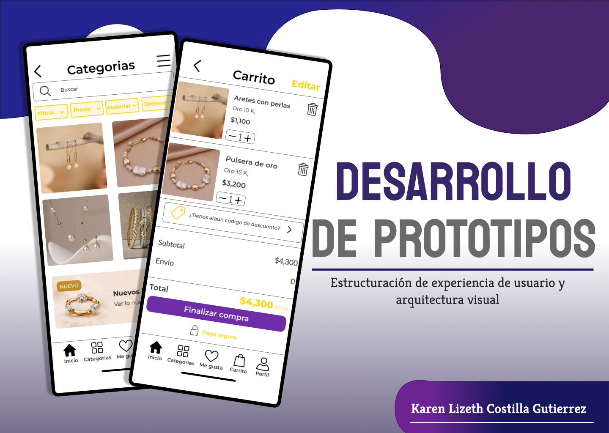
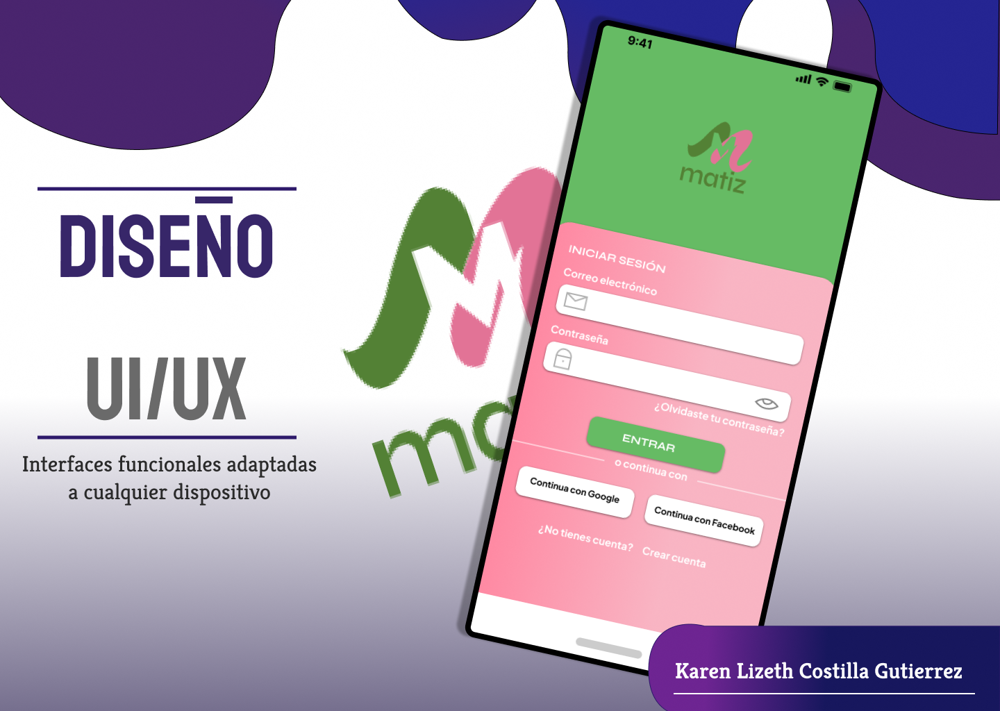
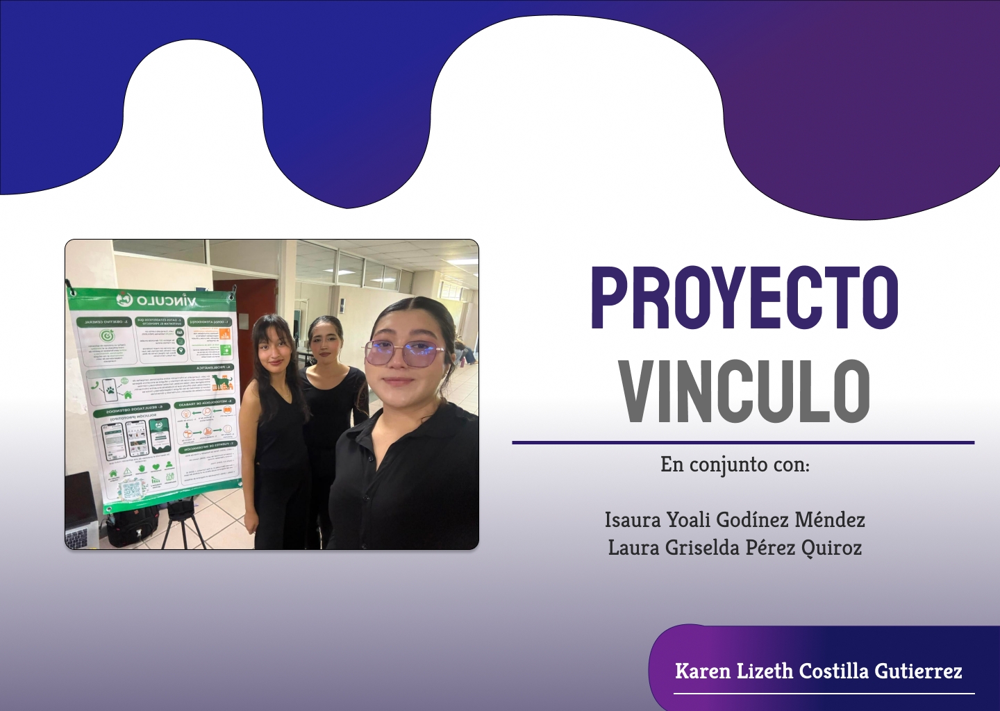
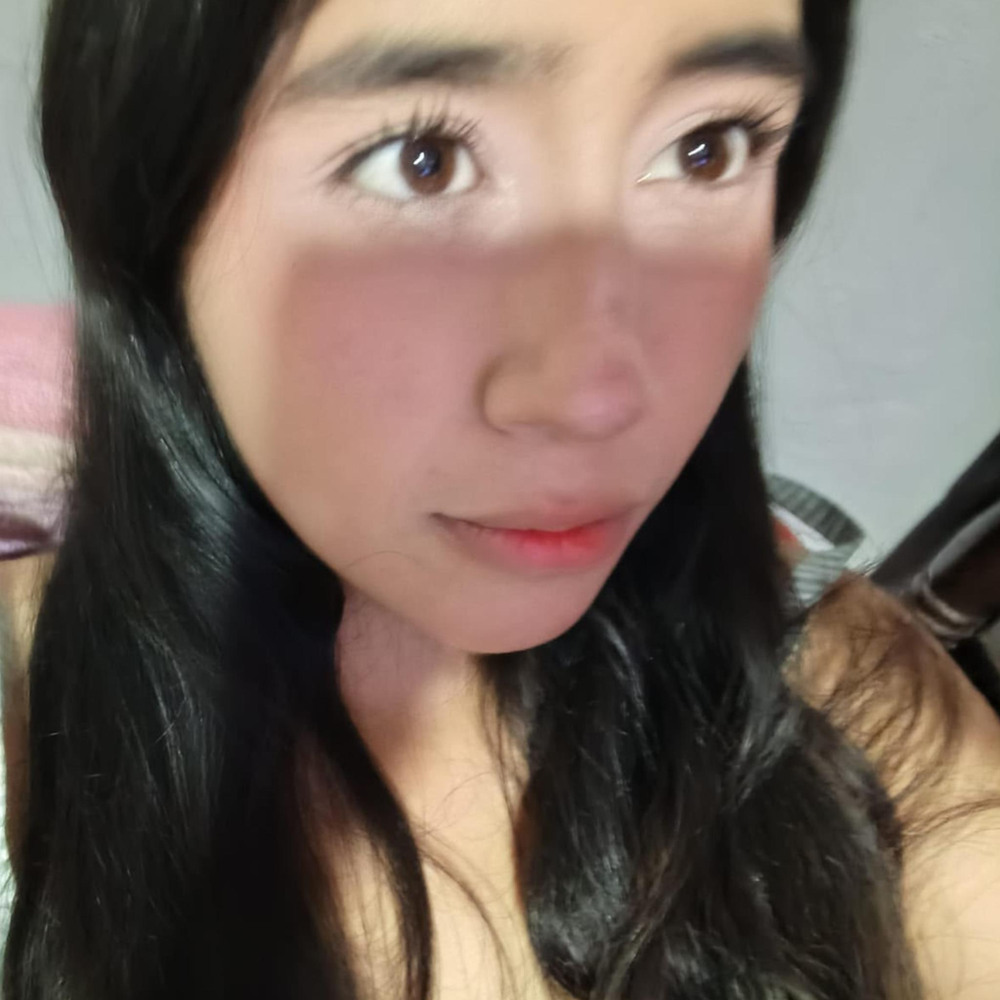
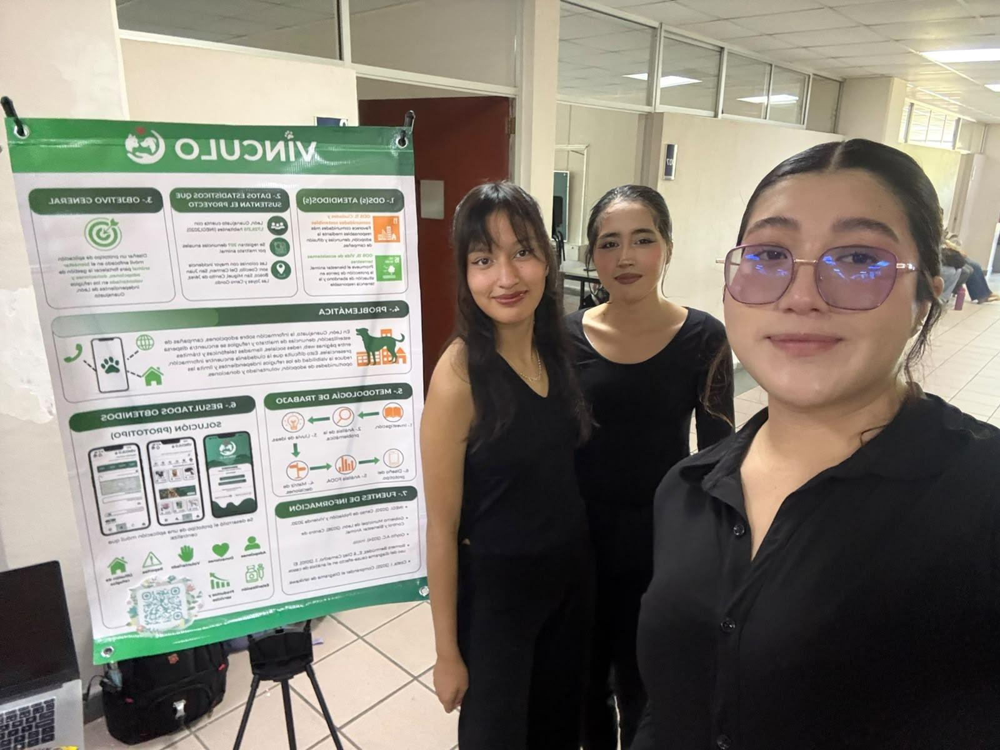
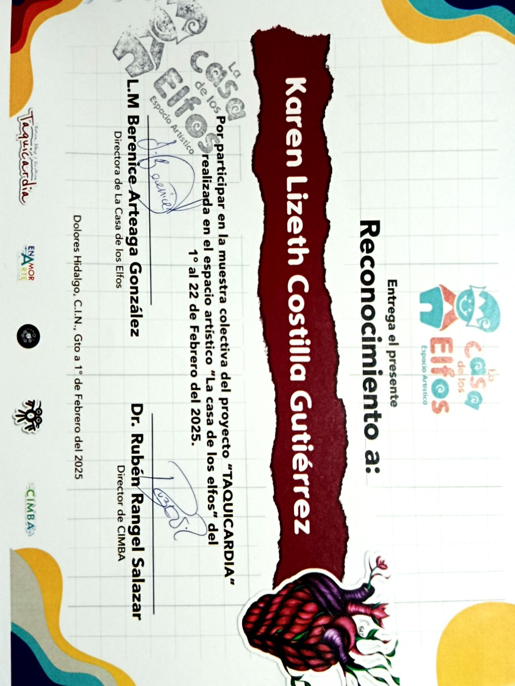
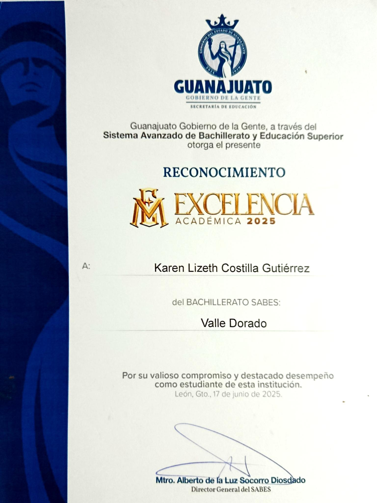

Tengo 18 años y soy estudiante de Ingeniería en Desarrollo de Software. Me caracterizo por ser una persona altamente dedicada, responsable y enfocada en el detalle.
Me gusta la maquetación web y el diseño de interfaces funcionales. Cuento con formación en lógica de programación, bases de datos y maquetación.




Proyecto enfocado en minimizar la sobrepoblación animal en situación de calle y evitar la sobrecarga en refugios.

Formé parte de la exposición artística "Taquicardia" en el museo EnAmorArte con la obra titulada "Ramé".

Cuento con un certificado de excelencia académica otorgado por La Salle.
479-xxx-xxx
Karen@gmail.com